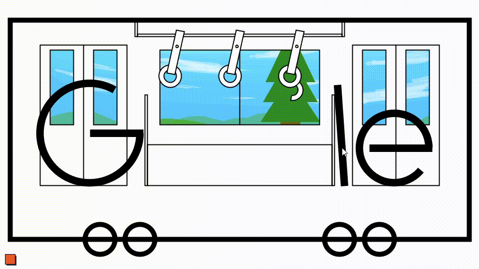

portfolio
links
G00gle train
大学の課題で作ったものです。D&Dでつり革を動かせます。左下のボタンを押すと画面に変化が起きます。

tenori sound pad
大学の課題で作ったものです。キーボードのA～Lで操作します。音が出ます。
Discord ガチャbot
チャットアプリ「Discord」の、実用というよりはネタ向けに作ったbotプログラムです。Northflankにて動かしました。
データベース等は実際に動かしているものとはすべて書きかえてあり、GitHub上ではご飯の名前を排出するbotとしてまとめてあります。